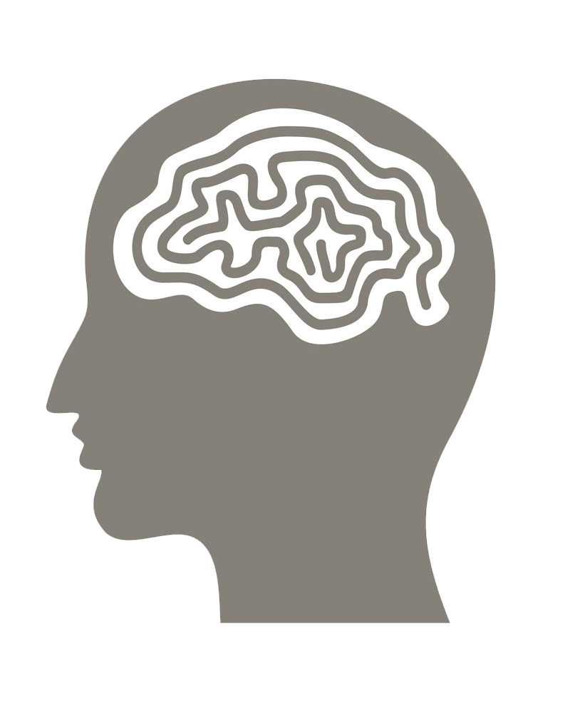

Introduction
Illegal drugs are chemical compounds that can cause a change in our physiology or psychology, being able to affect the way the brain works, how we feel and behave, and how we perceive our senses. For such reasons, certain types of these substances have been outlawed for their dangerous effect on the human body, the mental component of addiction, and how they can affect the entirety of a person’s life. I decided to research this topic because I was interested in how they affected our brains and bodies, and why exactly they are considered to be dangerous enough to be outlawed. The drugs that we will be observing are Ecstasy and LSD.